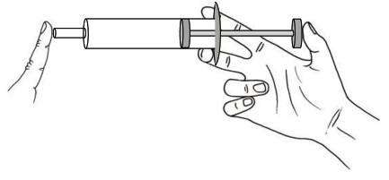
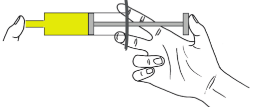
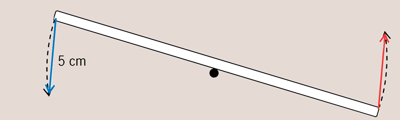
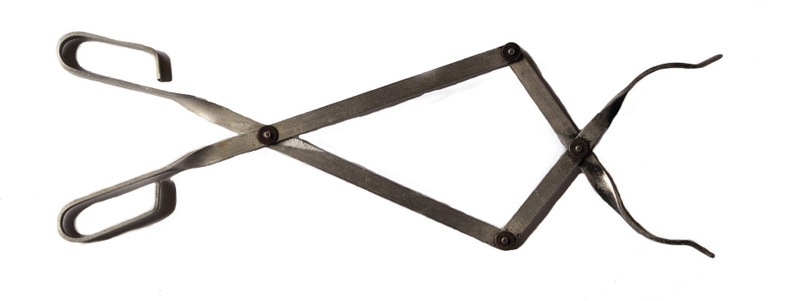
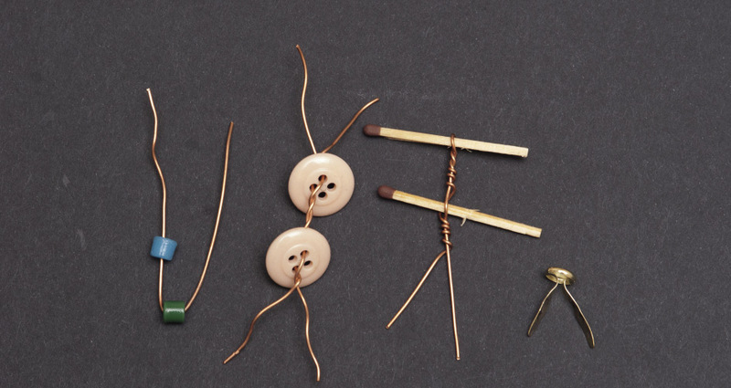

<div class="container">
  <div id="contents" class="col-md-12 main-content"><h1 xmlns="http://www.w3.org/1999/xhtml" id="toc-id-23">Mini-pat ontwerp 'n stuk lewensreddingsgereedskap</h1>

    <figcaption xmlns="http://www.w3.org/1999/xhtml"><p>Figuur 1</p></figcaption><figcaption xmlns="http://www.w3.org/1999/xhtml"><p>Figuur
2</p></figcaption><b xmlns="http://www.w3.org/1999/xhtml">paramedici
</b> het opgedaag om die vasgekeerde
mense te help. Ongelukkig kon die paramedici hulle nie betyds
uit die wrak kry om vir hulle mediese behandeling te gee of hulle
by die hospitaal te kry nie. Die twee mense binne die motor het
gesterf.

<p xmlns="http://www.w3.org/1999/xhtml"><b>Paramedici 
</b>is mense wat in
noodhulp opgelei is. Hulle kan
baie dinge doen wat dokters
doen.

</p><figcaption xmlns="http://www.w3.org/1999/xhtml"><p>Figuur 3</p></figcaption><figcaption xmlns="http://www.w3.org/1999/xhtml"><p>Figuur 4</p></figcaption><figcaption xmlns="http://www.w3.org/1999/xhtml"><p>Figuur 5</p></figcaption><p xmlns="http://www.w3.org/1999/xhtml">Die stootkrag kan deur die gebruik van 'n hefboom
sterker of swakker gemaak word. 'n Hefboom kan
jou dus 'n meganiese voordeel gee.
</p><p xmlns="http://www.w3.org/1999/xhtml">
'n Beweging kan deur die gebruik van 'n hefboom
groter of kleiner gemaak word.
</p><p xmlns="http://www.w3.org/1999/xhtml">
Die rigting van 'n beweging kan deur die gebruik
van 'n hefboom verander word.
</p>

    
   <figcaption xmlns="http://www.w3.org/1999/xhtml"><p class="x--caption">Figuur 6: Dit is hoe jou greep op
'n
spuit moet wees sodat jy die suier met jou duim kan stoot.
</p></figcaption>

   <figcaption xmlns="http://www.w3.org/1999/xhtml"><p class="x--caption"> Figuur 7: Plaas jou vinger liggies voor
die uitlaat. Probeer nou om die suier in te druk.
</p></figcaption><li xmlns="http://www.w3.org/1999/xhtml">
    <p class="x--Body-investigation-hanging"> Wat voel jy as jy die suier nou
druk?
</p>
    <hr/></li>
    <li xmlns="http://www.w3.org/1999/xhtml">

    <p class="x--Body-investigation-hanging"> Wat dink jy verhoed die suier om
heeltemal in te gaan as jy hard daarteen
druk?

</p>
    <hr/></li><li xmlns="http://www.w3.org/1999/xhtml">
    <p class="x--Body-investigation-hanging"> Dink jy daar is iets in die spuit
wat jy nie kan sien nie?
</p>
    <hr/>
    <p class="x--Body-Text">Om 
 <span class="Body-bold"><b>saam te pers
</b></span>beteken om iets kleiner te maak. As jy die suier na binne druk
terwyl jy die uitlaat toehou, pers jy die lug binne die spuit saam. Dit beteken
dat jy
die lugmolekules dwing om nader aan mekaar te beweeg.
</p>

<figure><figcaption><p>
Figuur
    8</p></figcaption></figure></li><li xmlns="http://www.w3.org/1999/xhtml">

    <p class="x--Body-investigation-hanging"> Dink jy dat jy 'n spuit kan
gebruik om iets te beweeg sonder om daaraan te
raak? Probeer om dit te doen.
</p>
   
    <figure><figcaption><p>
Figuur
    9</p></figcaption></figure>

    <p class="x--Body-Text">Kyk of jy klein voorwerpe kan
rondbeweeg deur die
suier na binne te stoot.
</p>

      
       
	<figure><div class="frame-3"></div> <figcaption>Figuur 10</figcaption></figure></li><p xmlns="http://www.w3.org/1999/xhtml">'n Stoottoestel gemaak van spuite en pyp wat met
lug gevul is, word 'n
 <b> pneumatiese 
</b>meganisme
genoem. Daar bestaan ook ander soorte
pneumatiese meganismes.
</p>

    <p xmlns="http://www.w3.org/1999/xhtml" class="x--Body-box-no-indent">Die woord pneumaties word
gebruik om aan te dui dat gas
gebruik word om iets te stoot.
</p>
    <li xmlns="http://www.w3.org/1999/xhtml" value="5">
    <p class="x--Body-investigation-hanging--1-3-">Wat voel jy as jy die suier
indruk en probeer om
die hopie boeke met jou pneumatiese stoottoestel
te beweeg?
</p>
<hr/>

    <p class="x--Body-Text">As jy 'n pneumatiese stoottoestel gebruik
om 'n
voorwerp te probeer beweeg, kan
jy aanvanklik net saggies druk, omdat dit makliker is om die lug saam te pers
as om die boeke te beweeg. Jy kan eers met 'n groot krag druk wanneer die
suier
omtrent heelpad ingedruk is. Dink jy dieselfde sal gebeur as daar water in plaas
van gas in die silinders is?
</p>

    <p class="x--Body-Text">Vul 'n spuit met water om dit te ondersoek.
</p>

    
       
	 <figure><div class="frame-3"></div>
	<figcaption><p>Figuur 11</p></figcaption></figure><figure>
<figcaption><p>Figuur 12</p></figcaption></figure></li><li xmlns="http://www.w3.org/1999/xhtml">
    <p class="x--Body-investigation-hanging"> Dink jy water kan saampers net
soos jy die lug saamgepers het? Probeer dit.
Beskryf die verskil wat jy opmerk tussen die gebruik van water in die spuit en
die gebruik van lug in die spuit.
</p>
    <hr/></li>
<p xmlns="http://www.w3.org/1999/xhtml">'n Vloeistof kan nie saamgepers word nie.
</p>

    <figcaption xmlns="http://www.w3.org/1999/xhtml"><p>Figuur 13</p></figcaption><p xmlns="http://www.w3.org/1999/xhtml">As daar lug of ander gasse in 'n toestel soos hierdie
is word dit 'n
 <b>pneumatiese
</b>meganisme genoem.
As daar water of 'n ander vloeistof soos olie in
die silinders en die verbindingspyp is, word dit 'n

<b>hidrouliese
</b> meganisme genoem.
</p>

    <li xmlns="http://www.w3.org/1999/xhtml" value="7">
    <p class="x--Body-investigation-hanging"> Wat sal die sterkste druk met
dieselfde twee spuite gee: lug of water? Hoe kan
jy dit ondersoek?
</p>
    <hr/></li>
<li xmlns="http://www.w3.org/1999/xhtml">
    <p class="x--Body-investigation-hanging">Hoeveel boeke kan jy opmekaar pak
en met jou pneumatiese stoottoestel
wegstoot?
</p>
    <hr/>
    <figure><figcaption><p>Figuur
14</p></figcaption></figure>
</li>

    <li xmlns="http://www.w3.org/1999/xhtml">
    <p class="x--Body-investigation-hanging"> Hoeveel boeke kan jy opmekaar pak
en met jou hidrouliese stoottoestel
wegstoot?
</p>
    <hr/></li><li xmlns="http://www.w3.org/1999/xhtml">
    <p class="x--Body-investigation-hanging">Waarom dink jy lewer 'n
hidrouliese
stoottoestel meer stootkrag as 'n
pneumatiese stoottoestel?
</p>
    <hr/>
    

    <p class="x--Body-Text">Om die verskil tussen 'n pneumatiese en 'n
hidrouliese toestel te voel, hou twee
suiers van 'n stoottoestel in jou hande en druk die suiers van beide kante
af
in.
</p>

	<figure><figcaption><p>Figuur 15</p></figcaption></figure><p class="x--Body-investigation-hanging">Doen dit
terwyl die spuite met lug
gevul is. Doen dit ook terwyl die spuite met
water gevul is.
</p></li>
<li xmlns="http://www.w3.org/1999/xhtml">
    <p class="x--Body-investigation-hanging"> Watter verskil voel jy tussen die
tussen die pneumatiese stoottoestel en die
hidrouliese stoottoestel?
</p><hr/></li>
    <li xmlns="http://www.w3.org/1999/xhtml">

    <p class="x--Body-investigation-hanging">Verduidelik waarom pneumatiese
stoottoestelle en hidrouliese stoottoestelle
verskillende dinge doen.
</p>
    <hr/>
    </li>

    <figure xmlns="http://www.w3.org/1999/xhtml"><figcaption><p class="x--Body-Text para-style-override-113"><span class="char-style-override-7">Figuur 16</span></p></figcaption></figure>
<p xmlns="http://www.w3.org/1999/xhtml" class="x--Body-box-no-indent">Veronderstel die twee spuite en die pyp
is met water gevul. As die suier aan die linkerkant met 1 cm
ingedruk word, sal die suier aan die regterkant met 1 cm uitbeweeg, of nie?
Verduidelik jou antwoord.
</p>


      <p xmlns="http://www.w3.org/1999/xhtml" class="x--Body-box-no-indent">As 'n swaar voorwerp, soos 'n
klip of 'n
boks vol sand, langs die suier aan die regterkant neergesit
word, sal die voorwerp ook oor dieselfde afstand beweeg as die afstand waarmee
jy die linkerkantste
suier indruk? Verduidelik jou antwoord.
</p>

      <figure xmlns="http://www.w3.org/1999/xhtml"><figcaption><p class="x--Body-Text para-style-override-114"><span class="char-style-override-7">Figuur 17</span></p></figcaption></figure>
<p xmlns="http://www.w3.org/1999/xhtml" class="x--Body-box-no-indent">Veronderstel die twee spuite word met lug
gevul, en 'n swaar voorwerp word langs die suier aan die
regterkant neergesit. As die suier aan die linkerkant 1 cm diep ingedruk word,
sal die suier aan die
regterkant 1 cm ver uitbeweeg, of nie? Verduidelik jou antwoord.
</p>

      <p xmlns="http://www.w3.org/1999/xhtml" class="x--Body-box">Veronderstel jy gebruik 'n sterk stok of
metaalstaaf as hefboom om 'n baksteen of ander swaar
voorwerp te beweeg. As die steunpunt presies in die middel van die stok of
metaalstaaf is, en jy die een
endpunt 5 cm ver stoot, hoe ver sal die ander endpunt beweeg?
</p>

      <div xmlns="http://www.w3.org/1999/xhtml">
        <div class="frame-3"></div>       
      </div>

      <p xmlns="http://www.w3.org/1999/xhtml" class="x--Body-box">Sal dieselfde gebeur as jy 'n buigsame
hefboom,
soos jou plastiekliniaal, gebruik? Verduidelik jou
antwoord.
</p>

<figcaption xmlns="http://www.w3.org/1999/xhtml"><p>Figuur 19</p></figcaption><li xmlns="http://www.w3.org/1999/xhtml">
    <p class="x--Body-investigation-hanging"> Veronderstel die twee spuite en
die buis word met water gevul. Indien die
suier aan die linkerkant 1 cm diep ingestoot word, sal die voorwerp aan die
regterkant slegs 1 cm ver beweeg, of nie? Verduidelik jou antwoord.
</p>
    <hr/></li>
    <li xmlns="http://www.w3.org/1999/xhtml">

    <p class="x--Body-investigation-hanging"> Wat sal anders wees as die spuite
en die buis met lug gevul word in plaas van
water? Verduidelik jou antwoord.
</p>
    <hr/>

    <p class="x--Body-investigation-hanging para-style-override-6">
   Die spuit aan die regterkant is dikker as die spuit aan die linkerkant.
</p>
    
    <figure><span></span><figcaption><p class="x--Body-Text para-style-override-1"><span class="char-style-override-7">Figuur 20</span></p></figcaption></figure>
 </li><li xmlns="http://www.w3.org/1999/xhtml">
    <p class="x--Body-investigation-hanging"> Veronderstel die twee spuite en
die buis in figuur 20 word met water gevul.
As die suier aan die linkerkant 1 cm diep ingestoot word, sal die suier aan die
regterkant 1 cm ver uitbeweeg, of nie? Verduidelik jou antwoord.
</p>
    <hr/></li>
<li xmlns="http://www.w3.org/1999/xhtml"><ol>
<li>
    <p class="x--Body-investigation-hanging"> In watter geval hieronder hoef jy
die kleinste krag aan die linkerkant uit te
	 oefen om die voorwerp aan die regterkant te laat beweeg?
</p>
<hr/>
     <figure><div class="frame-3"></div>
	<figcaption><p>Figuur 21</p></figcaption></figure></li><li>
    <p class="x--Body-investigation-hanging-a-">Doen 'n paar eksperimente
om jou
antwoord op die vorige vraag te
kontroleer. Skryf 'n kort verslag in die ruimte hier onder.
</p>
    <hr/></li>
    </ol>
    </li>
<li xmlns="http://www.w3.org/1999/xhtml">
    <p class="x--Body-investigation-hanging"> Lebogang sê as jy 'n
dik
spuit gebruik om 'n om 'n dunner spuit “aan te
dryf”,
verloor jy krag, maar wen afstand. Jaamiah het 'n ander opinie. Sy sê
dat
jy
beide afstand en sterkte wen.
</p>

    <p class="x--Body-investigation-hanging">Wat dink jy, en waarom dink jy so?
</p>
    <hr/></li><figcaption xmlns="http://www.w3.org/1999/xhtml"><p>Figuur 22</p></figcaption><p xmlns="http://www.w3.org/1999/xhtml"> In die diagram hierbo word 'n dunner spuit gebruik
om 'n dikker spuit aan te dryf. Die geel voorwerp sal
oor 'n kleiner afstand beweeg as die rooi suier, maar
die krag op die geel voorwerp is groter as op die rooi
suier. Die meganiese voordeel is “groter as
1”. Dit
beteken dat daar inderdaad 'n meganiese
 <em>voordeel
</em> is, maar 'n afstand
 <em> nadeel
 </em> is.
</p>

     <figcaption xmlns="http://www.w3.org/1999/xhtml"><p class="x--Body-Text para-style-override-118"><span class="char-style-override-7">Figuur 23</span></p></figcaption><p xmlns="http://www.w3.org/1999/xhtml">Hierdie diagram wys 'n dikker spuit wat gebruik
word om 'n dunner spuit aan te dryf. Die geel
voorwerp sal oor 'n groter afstand beweeg as die
rooi suier, maar die krag op die geel voorwerp is
kleiner as die krag op die rooi suier. Die meganiese
voordeel is “kleiner as 1”. Dit beteken dat
daar 'n
meganiese

<em>nadeel
</em>is, maar 'n afstand
 <em>voordeel
</em>.</p>

    <li xmlns="http://www.w3.org/1999/xhtml" class="x--Body-text-bullet"> 'n spreitang om stukke metaal
'
uitmekaar te trek en stukke
metaal uit te skeur,
</li>

      <li xmlns="http://www.w3.org/1999/xhtml" class="x--Body-text-bullet"> 'n snyer om metaal te sny,
</li>

      <li xmlns="http://www.w3.org/1999/xhtml" class="x--Body-text-bullet">'n gekombineerde gereedskapstuk
wat kan sny en sprei, en
</li>

      <li xmlns="http://www.w3.org/1999/xhtml" class="x--Body-text-bullet">
        'n ram wat groot openinge
maak waardeur vasgevange
mense bevry kan word.

 </li>
    <figure xmlns="http://www.w3.org/1999/xhtml"><div class="frame-3"></div>
           
            <figcaption>Figuur 24</figcaption></figure><span xmlns="http://www.w3.org/1999/xhtml" class="Body-bold"><b>Die situasie
</b></span><p xmlns="http://www.w3.org/1999/xhtml" class="x--Body-box-no-indent">'n <b>Model</b> is 'n klein
weergawe
van 'n werklike produk. Dit wys
hoe die werklike produk werk,
maar kan nie die werk van die
werklike produk doen nie. 'n
Model hoef nie van dieselfde
materiaal as die werklike
produk gemaak te wees nie.
</p>
    <li xmlns="http://www.w3.org/1999/xhtml" class="x--Body-text-bullet">  ontwerp word om verfrommelde
metaalwerk
oop te sny of te breek,
</li>

      <li xmlns="http://www.w3.org/1999/xhtml" class="x--Body-text-bullet">  werk met gekoppelde hefbome,
</li>

      <li xmlns="http://www.w3.org/1999/xhtml" class="x--Body-text-bullet">  dit moet aan 'n plat stuk karton,
wat as
basis sal dien, vasgeheg wees, en
</li>

      <li xmlns="http://www.w3.org/1999/xhtml" class="x--Body-text-bullet"> moet deur 'n hidrouliese stelsel
aangedryf word.
</li>
    <li xmlns="http://www.w3.org/1999/xhtml">
    <p class="x--Body-investigation-hanging">Met watter probleme het die
paramedici op die ongelukstoneel te doen gekry?
</p>
    <hr/></li>
    <li xmlns="http://www.w3.org/1999/xhtml">

    <p class="x--Body-investigation-hanging"> Wie sal die reddingsgereedskap
gebruik?
</p>
    <hr/></li>
    <li xmlns="http://www.w3.org/1999/xhtml">

    <p class="x--Body-investigation-hanging"> Waar sal die reddingsgereedskap
gebruik word?
</p>
    <hr/></li>
    <li xmlns="http://www.w3.org/1999/xhtml">

    <p class="x--Body-investigation-hanging"> Hoe sal die gereedskap hulle help?
</p>
    <hr/></li>
    <li xmlns="http://www.w3.org/1999/xhtml">

    <p class="x--Body-investigation-hanging--1-3-"> Skryf nou die
<b>ontwerpopdrag</b>. Gebruik die
antwoorde op die vrae wat jy pas beantwoord het.
Begin jou paragraaf met:
</p> <p class="x--Body-investigation-hanging"><span class="char-style-override-11"><i>Ek moet die volgende gereedskapstuk ontwerp
	 en maak:
...
    </i></span> [4]</p>
    <hr/>
    <div class="aside">
      <p class="x--Body-box-no-indent">'n <span class="x--Opener-bold-text"><b>Ontwerpopdrag
</b></span>vertel
ons wat die probleem is en
wie voordeel uit die oplossing
sal trek. Dit gee ons nie die
oplossing vir die probleem nie.
</p>
    </div>

   <div class="aside">
      <p class="x--Body-box-no-indent">Vraag 6 (a) tot (c) sal jou help
om te verstaan wat die woord
 <span class="x--Opener-bold-text"><b>spesifikasies
</b></span> means.</p>
    </div></li>
    
<li xmlns="http://www.w3.org/1999/xhtml">
    <p class="x--Body-investigation-hanging">Identifiseer die

    <span class="char-style-override-6"><b>spesifikasies
</b></span> van die oplossing.
</p>
    <ol><li>
    <p class="x--Body-investigation-hanging-a-"> Waarvoor sal die
reddingsgereedskap
gebruik word?
 (2)</p><hr/></li><li>
    <p class="x--Body-investigation-hanging-a-"> Wat sal die gereedskap laat
werk? 
 (2)</p><hr/></li><li>
    <p class="x--Body-investigation-hanging-a-"> Waaraan moet die model vasgeheg
wees 
 ? (1)</p><hr/></li></ol></li>
<li xmlns="http://www.w3.org/1999/xhtml">
    <p class="x--Body-investigation-hanging--1-3-"> Identifiseer die

    <span class="Body-bold"><b>beperkings 
</b></span> op die materiale.
</p>

    <p class="x--Body-investigation-hanging--1-3-"><i>Ek moet die volgende
materiale gebruik om my
model te bou:</i>
 [3]</p>
<hr/><div class="aside">
      <p class="x--Body-box-no-indent"><span class="char-style-override-2"><b>Beperkings
</b></span> is grense op wat
moontlik kan werk. Die feit dat
'n inkopiesak kan breek as dit
oorlaai word is byvoorbeeld
'n beperking. As jy net sekere
hoeveelheid tyd het om iets te
bou word dit ook 'n beperking
genoem.
</p>
    </div>
    <p class="x--Body-Text para-style-override-120">[Totaal: 12]</p>

</li><div xmlns="http://www.w3.org/1999/xhtml" class="frame-3"></div>

      <div xmlns="http://www.w3.org/1999/xhtml" class="frame-3"></div>

      <div xmlns="http://www.w3.org/1999/xhtml" class="frame-3"></div>
   
	<figcaption xmlns="http://www.w3.org/1999/xhtml"><p>Figuur 25</p></figcaption><div xmlns="http://www.w3.org/1999/xhtml" class="frame-3"></div>
	<figcaption xmlns="http://www.w3.org/1999/xhtml"><p>Figuur 26: Ander leerders se tekeninge
</p></figcaption><div xmlns="http://www.w3.org/1999/xhtml" class="frame-3"></div>
	<figcaption xmlns="http://www.w3.org/1999/xhtml"><p>Figuur 27: Nog tekeninge van ander leerders</p>
</figcaption><li xmlns="http://www.w3.org/1999/xhtml">
    <p class="x--Body-investigation-hanging">Skets 'n moontlike ontwerp vir
die
reddingsgereedskap. Jy kan 'n eenvoudige of
moeilike model maak, solank jy dit behoorlik doen. Dit is goed as jou model net
wys hoe die gereedskap sal werk, selfs al werk die model nie self nie.
	</p><p> Dink aan die verskillende tipes lewenskake-reddingsgereedskap.
Jy moet kies
en net <em>een tipe reddingsgereedskap</em> maak.
</p>

    <p class="x--Body-investigation-hanging">Sit byskrifte by jou tekening om
die verskillende onderdele aan te dui asook die
materiaal waarvan elkeen gemaak moet word. Wys ook waar die
spuite wat die hidrouliese stelsel vorm, sal inpas.
</p>

   
    <p class="x--Body-investigation-hanging">[Totaal: 7]</p></li>
<li xmlns="http://www.w3.org/1999/xhtml">
    <p class="x--Body-investigation-hanging"> Maak 'n lys van al die
 <span class="char-style-override-6"><b>materiale
</b></span> wat jy beplan om te gebruik vir die bou van jou
model. Jy het in 'n vorige les onder
“spesifikasies” 'n lys hiervan gemaak.
Voeg
by hierdie lys enige ander materiaal wat jy nog gaan gebruik.
</p>

    <p class="x--Body-investigation-hanging">Wat gaan jy as steunpunte gebruik?
Wat gaan jy gebruik om die model aan die
groot vel karton vas te heg? En wat gaan jy gebruik om die spuit aan die groot
vel karton en aan die hefboom vas te heg?
 [6]</p>

    <figure><figcaption><p class="x--caption">Figuur 28: Hier is verskillende steunpunte en maniere
om stukke karton aanmekaar vas te heg wat deur
ander leerders gebruik is. Party daarvan is gekoop en ander is handgemaak.
</p></figcaption></figure> <hr/>
</li>

<li xmlns="http://www.w3.org/1999/xhtml">

    <p class="x--Body-investigation-hanging"> Maak 'n lys van die

    <span class="Body-bold"><b>gereedskap
</b></span>wat jy sal gebruik om jou model te bou. Onthou
dat die spyker wat jy gebruik om gate mee te maak ook 'n gereedskapstuk
genoem kan word
. [4]</p>
    <hr/></li>
    
    
    <li xmlns="http://www.w3.org/1999/xhtml">

    <p class="x--Body-investigation-hanging--1-3-"> Party stukke gereedskap kan
gevaarlik
wees as hulle verkeerd gebruik word. Skryf
'n 

    <span class="Body-bold"><b>veiligheidsreël </b>
</span> neer vir een van die
gereedskapstukke wat jy gaan gebruik. 'n Voorbeeld
van 'n veiligheidsreël word hier regs gewys.
 (2)</p>
 <hr/><div class="aside">
      <p class="x--Body-box-heading"><b>Veiligheidswaarskuwing
</b></p>

      <p class="x--Body-box-no-indent">Dra altyd 'n skêr met die
lemme wat grond toe wys. As
jy die skêr vir iemand aangee,
moet die lemme toe en in jou
hand wees.
</p>
    </div>
     
</li><li xmlns="http://www.w3.org/1999/xhtml">
    <p class="x--Body-investigation-hanging"> <span class="Body-bold"><b>Werksvolgorde.
</b></span>. Dit is die lys van stappe wat jy gaan volg wanneer jy die
model maak. Hieronder is 'n paar stappe om mee te begin. Voeg nog 'n
paar
stappe van jou eie by. Jy kan nog stappe by hierdie plan voeg terwyl jy aan jou
model werk
 (3)</p>

    <p class="x--Body-investigation-hanging">Stap 1:	 Teken die vorm van die
hefbome op die karton.
</p>

    <p class="x--Body-investigation-hanging">Stap 2:	 Sny die kartonhefbome
uit.
</p>

    <p class="x--Body-investigation-hanging">Stap 3:	 Maak 'n gat vir
die
steunpunt.
</p>

    <p class="x--Body-investigation-hanging">Stap 4:	 Sit die hidrouliese
stelsel aanmekaar met twee spuite van
verskillende diktes en 'n plastiekpyp.
</p>

    <p class="x--Body-investigation-hanging para-style-override-6">
    Stap
 5:</p>
    <hr/><p class="x--Body-investigation-hanging para-style-override-6">
    Stap
 6:</p>
    <hr/><p class="x--Body-investigation-hanging para-style-override-6">
    Stap
 7:</p>
    <hr/><p class="x--Body-investigation-hanging para-style-override-6">
    Stap
 8:</p>
    <hr/><p class="x--Body-Text para-style-override-108">[Totaal: 15]</p></li>
<span xmlns="http://www.w3.org/1999/xhtml" class="Body-bold"><b>2D werkstekening
</b></span> van jou model. Hierdie tipe tekening wys
jou hoe 'n voorwerp lyk as jy reg van die voorkant, die agterkant, die
sykant,
die
bokant of die onderkant daarna kyk. Tekeninge soos hierdie is nuttig, want hulle
wys die korrekte afmetings (dimensies) van die voorwerp.
<li xmlns="http://www.w3.org/1999/xhtml">
    <p class="x--Body-investigation-hanging">Kyk weer na Hoofstuk 2 om jou
geheue te verfris oor hoe om 'n 2D werkstekening te maak
.

</p>
</li><li xmlns="http://www.w3.org/1999/xhtml">
    <p class="x--Body-investigation-hanging--1-3-"> Maak 'n 2D
werkstekening wat
een aansig van jou reddingsgereedskapstuk wys. Teken die aansig wat die meeste
besonderhede van jou model wys.
</p>
</li><li xmlns="http://www.w3.org/1999/xhtml">
    <p class="x--Body-investigation-hanging--1-3-"> Elke onderdeel van die
gereedskapstuk moet die
korrekte grootte op jou tekening hê in vergelyking
met die ander onderdele op die tekening.
</p>
</li><li xmlns="http://www.w3.org/1999/xhtml">
    <p class="x--Body-investigation-hanging--1-3-">Jy hoef nie jou model
volgens 
 <span class="Body-bold"><b>skaal
</b></span>
    te teken nie en
jy hoef nie afmetings op jou tekening te wys nie.
</p>

    <div class="aside">
      <p class="x--Body-box-no-indent">Soms is die werkstekening
 op 'n kleiner 

  <span class="x--Opener-bold-text"><b> skaal
</b></span> as die werklike voorwerpe. As 1 mm op die tekening byvoorbeeld 5 mm
die werklike voorwerp voorstel, sê jy die skaal is 1:5.


 </p>
    </div>

    <figure><figcaption><p class="x--caption">Figuur 29: 'n
“Buitenlyneblok”-tekening van 'n
hefboomstelsel
</p></figcaption></figure> </li><span xmlns="http://www.w3.org/1999/xhtml" class="Body-bold"><b>buitelynblok
</b></span>te teken om in te werk. Kyk na figuur 29 op die vorige
bladsy as 'n voorbeeld.
<tbody xmlns="http://www.w3.org/1999/xhtml"><tr class="Row-Column-262"><td class="None cell-style-override-3">
            <p class="x--Body-Text"><span class="Body-bold"><b>Jou onderwyser
sal na die volgende
dinge kyk:
</b></span></p>
          </td>

          <td class="None cell-style-override-3">
            <p class="x--Body-Text"><span class="Body-bold"><b>Merkie
</b></span></p>
          </td>
        </tr><tr class="Row-Column-263"><td class="None cell-style-override-3">
            <p class="x--Body-Text">Het die tekening 'n opskrif?
</p>
          </td>

          <td class="None cell-style-override-3"/>
        </tr><tr class="Row-Column-264"><td class="None cell-style-override-3">
            <p class="x--Body-Text">Sluit die opskrif die aansig waarin die
tekening gedoen is in, byvoorbeeld die
vooraansig?
</p>
          </td>

          <td class="None cell-style-override-3"/>
        </tr><tr class="Row-Column-264"><td class="None cell-style-override-3">
            <p class="x--Body-Text">Is die horisontale en die vertikale
afmetings van jou model gebruik om die
blok te teken?
</p>
          </td>

          <td class="None cell-style-override-3"/>
        </tr><tr class="Row-Column-262"><td class="None cell-style-override-3">
            <p class="x--Body-Text">Is die blok op die korrekte manier met die
gebruik van dowwe lyne geteken?
</p>
          </td>

          <td class="None cell-style-override-3"/>
        </tr><tr class="Row-Column-262"><td class="None cell-style-override-3">
            <p class="x--Body-Text">Is die buitelyne van die toestel met
donker lyne geteken?
</p>
          </td>

          <td class="None cell-style-override-3"/>
        </tr><tr class="Row-Column-262"><td class="None cell-style-override-3">
            <p class="x--Body-Text">Is die verskillende onderdele van die
toestel in verhouding, soos in die model?
</p>
          </td>

          <td class="None cell-style-override-3"/>
        </tr><tr class="Row-Column-120"><td class="None cell-style-override-3">
            <p class="x--Body-Text">Is die tekening netjies?
</p>
          </td>

          <td class="None cell-style-override-3"/>
        </tr></tbody><li xmlns="http://www.w3.org/1999/xhtml" class="x--Body-text-bullet">  Kry jou materiaal en gereedskap
bymekaar.
</li>

      <li xmlns="http://www.w3.org/1999/xhtml" class="x--Body-text-bullet">  Teken en sny jou hefboom uit.
</li>

      <li xmlns="http://www.w3.org/1999/xhtml" class="x--Body-text-bullet">  Sit die hefboom aan mekaar.
</li>

      <li xmlns="http://www.w3.org/1999/xhtml" class="x--Body-text-bullet"> Jy kan ander materiale as dié
wat jy
beplan vir die steunpunt gebruik.
</li>
    <tr xmlns="http://www.w3.org/1999/xhtml"><td><p class="x--Body--above">Is die model volgens jou plan gemaak?

    </p></td><td>10</td></tr><tr xmlns="http://www.w3.org/1999/xhtml"><td> <p class="x--Body--above">Werk die model
goed?
 </p>
</td><td>5</td></tr><tr xmlns="http://www.w3.org/1999/xhtml"><td><p class="x--Body--above"><span>Is die model netjies
en goed gemaak
?</span></p></td><td>5</td></tr><tr xmlns="http://www.w3.org/1999/xhtml"><td/><td>20</td></tr><li xmlns="http://www.w3.org/1999/xhtml">
    <p class="x--Body-investigation-hanging--1-3-">Begin deur die vooraansig van
die spuit met dik,
donker lyne te teken. Dit gee die buitelyne van die
spuit.
</p>
</li><li xmlns="http://www.w3.org/1999/xhtml">
    <p class="x--Body-investigation-hanging--1-3-">Meet en trek jou
45°
diagonale lyne vanuit die
hoeke. Hulle moet ligte, dun lyne wees, want hulle
is konstruksielyne.
</p></li><li xmlns="http://www.w3.org/1999/xhtml">

    <p class="x--Body-investigation-hanging--1-3-">Meet en merk die diepte van
die spuit se
konstruksielyne op die projeksie. Onthou om die
helfte van die werklike afmeting te gebruik.
</p>
</li><li xmlns="http://www.w3.org/1999/xhtml">
    <p class="x--Body-investigation-hanging--1-3-"> Trek die lyne aan die
agterkant in. Dit word die
“agterlyne” genoem.
</p>
</li><li xmlns="http://www.w3.org/1999/xhtml">
    <p class="x--Body-investigation-hanging--1-3-">Teken weer oor al jou
buitelyne met jou potlood,
om die lyne donkerder te maak.
</p>

    <p class="x--Body-investigation-hanging--1-3-">[6]</p></li>
<div xmlns="http://www.w3.org/1999/xhtml" class="frame-3"></div> <div xmlns="http://www.w3.org/1999/xhtml" class="frame-3">
</div>
   
  <figcaption xmlns="http://www.w3.org/1999/xhtml"><p>Figuur 30</p>
      </figcaption><tbody xmlns="http://www.w3.org/1999/xhtml"><tr class="Row-Column-120"><td class="None cell-style-override-3">
            <p class="x--Body-Text"><span class="Body-bold"><b>Dinge om na te
kyk
</b></span></p>
          </td>

          <td class="None cell-style-override-3">
            <p class="x--Body-Text"><span class="Body-bold"><b>merkie
</b></span></p>
          </td>

        </tr><tr class="Row-Column-269"><td class="None cell-style-override-3">
            <p class="x--Body-Text">Het die tekening 'n opskrif?
</p>
          </td>

          <td class="None cell-style-override-3"/>
        </tr><tr class="Row-Column-270"><td class="None cell-style-override-3">
            <p class="x--Body-Text">Het jy met die konstruksielyne begin?
</p>
          </td>

          <td class="None cell-style-override-3"/>
        </tr><tr class="Row-Column-271"><td class="None cell-style-override-3">
            <p class="x--Body-Text">Is hulle dowwe lyne?
</p>
          </td>

          <td class="None cell-style-override-3"/>
        </tr><tr class="Row-Column-269"><td class="None cell-style-override-3">
            <p class="x--Body-Text">Het jy die hoeke teen 45° grade
geprojekteer?

            </p>
          </td>

          <td class="None cell-style-override-3"/>
        </tr><tr class="Row-Column-272"><td class="None cell-style-override-3">
            <p class="x--Body-Text">Het jy ½ die diepte-afmeting gebruik om
die
agterlyne te bepaal?
</p>
          </td>

          <td class="None cell-style-override-3"/>
        </tr><tr class="Row-Column-269"><td class="None cell-style-override-3">
            <p class="x--Body-Text">Het jy die buitelyne donker geteken?


</p>
          </td>

          <td class="None cell-style-override-3"/>
        </tr><tr class="Row-Column-269"><td class="None cell-style-override-3">
            <p class="x--Body-Text">Is jou tekening netjies?
</p>
          </td>

          <td class="None cell-style-override-3"/>
        </tr></tbody><span xmlns="http://www.w3.org/1999/xhtml"></span> 
  </div>
</div>